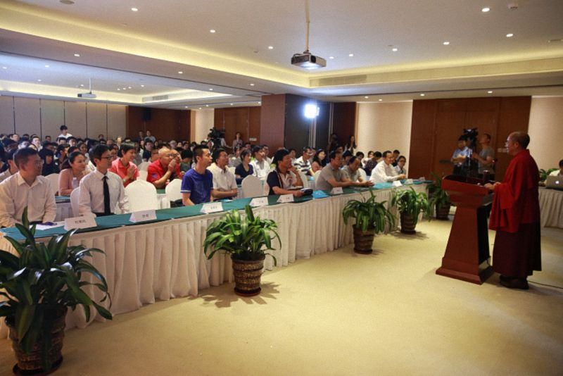
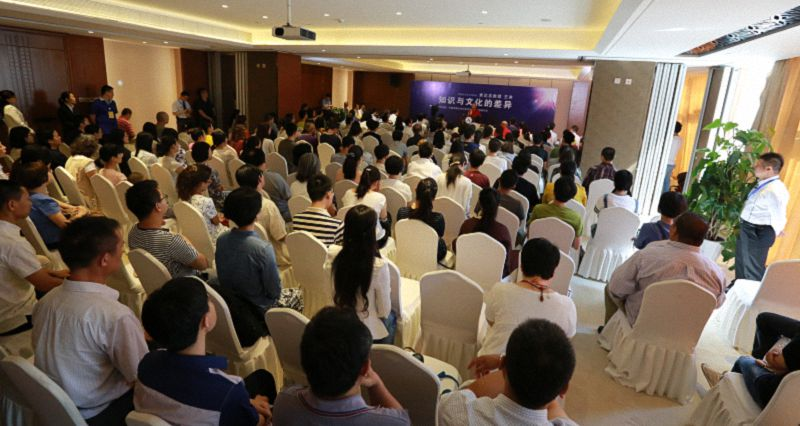

知识与文化的差异——中国传媒大学演讲
『2015年6月7日』
主持人：
尊敬的索达吉堪布，各位嘉宾、朋友、老师、同学们，大家上午好！我是中国传媒大学宗教学与文化传播研究所的所长。
首先，我想先向大家介绍一首歌的几句歌词：
巍巍雄壮的雪山是我修行的地方，
茫茫无边的红尘是我抛弃的故乡，
常常慈悲的恩师是我永远的怙主，
深深密传的窍诀是我生生的珍宝，
满山鲜花的色达是我修行的圣地，
牛羊肥壮的雪域是我学密的地方……
这首歌曲的名字叫《修行之歌》，由索达吉堪布作词。堪布是四川甘孜炉霍人，生于1962年，今年是他出家的第三十年。作为四川喇荣五明佛学院的大堪布，索达吉堪布在过去的三十年中，弘法利生，饶益有情，注重教学，硕果累累——《显密宝库》《妙法宝库》《智悲宝库》为世人所关注。同时，堪布可谓足迹遍寰宇，法音响天下。
大家知道，藏文化从十一世纪开始向东传播，十三世纪达到一个高潮，进入二十一世纪后，作为给中华民族带来殊荣的藏文化载体。因应时代的需要，藏文化寻求传播的新方式、新途径，继续影响并改变着人类思想文化的进程，这也显示出藏文化伟大的生命力。索达吉堪布身体力行，是推动汉藏传统文化继承与弘扬的杰出代表。他发起的世界青年佛学研讨会、“启动爱心”的活动倡议、已付诸实施的善行等等，则是一个又一个的亮点。
作为本次讲座的学术支持单位，中国传媒大学宗教学与文化传播研究所成立于2010年。这个研究所主要是研究佛教、基督教、道教、巴哈伊教等宗教，力图创作并开发相关文化产品，努力推动传媒大学宗教学学科的发展，推动宗教文化的发展与繁荣，加强与学术界、宗教界、传媒界的学术交流、开展项目合作，增进了解，广结良缘。
下面欢迎索达吉堪布为我们开示——

尊敬的所长、各位老师和同学们，大家好！很荣幸能来到传媒大学宗教研究所与大家一起交流。我先和大家分享一些我的观点和建议，之后也欢迎大家给我提出一些指点、批评。
现代人的思想和前人非常不同。以前的交通、信息都比较闭塞，人与人之间、民族之间、国家之间的信息往来并不是非常便利，但在二十一世纪的今天，我们则处于一个信息爆炸的时代。我们每天所接收到的信息非常多，导致我们所要面对的问题、痛苦也越来越多。面对这样一个新的挑战，我们需要有效的应对方法，而人与人之间的互动、互信、互相学习不可缺少。因此，今天能与大家沟通、互相学习，我发自内心地欢喜。
我对“知识与文化的差异”有过很多思考，不过这几天刚从海拔四千多米的地方来到北京，我好像还有点低原醉氧，也许很多内容不能清楚地表达出来，但无论如何，我们今天可以一起思考。
知识不同于文化
我们经常听到人们这样评价别人：这个人的知识面特别广，是个文化人……绝大多数时候，人们都认为知识和文化是一个意思，但其实这两个词并不完全一样。从我的理解来看，所谓的文化，往往是传统积累的结果。从历史上来看，我们的民族文化、宗教文化乃至整个传统文化等等，都是历史延续的结果。也正因为如此，文化往往保存在人们的血液中，融入到生活的方方面面，甚至体现在穿着上。
在日常生活里，人们的确会在一些场合里，用“文化”代替“知识”。拿我自己来举例：我的父母不识字，既不认识藏文，也不认识汉文，所以我经常跟别人说，我的父母没文化。但实际上，我的父母是有文化的，因为你能从他们身上清楚地看到藏民族的文化气息——他们穿着藏族的服装，讲着藏语，信仰着藏传佛教等等。他们身上的这些藏民族文化特色从没改变过。
很多人都混淆了“文化”和“知识”，认为有知识就是有文化，但这两者并不完全相同。“知识”这个词在藏文中叫“希夏”，就是所了知的东西。这样看的话，知识又可以分为科学知识、技术知识、历史知识、宗教知识、人文知识以及传媒大学所擅长的媒体知识等等。一个人可以学到很多知识，但不一定就有文化。现在人们经常讲，某某人是知识分子，因为他在学校里读完了本科、硕士、博士，甚至已经成为了博士生导师。但他是不是有文化的人呢？很难说。比如，一个汉族人广闻博学、知识丰富，但对汉族五千年来的传统文化一窍不通，那他未必是一个有文化的人。
文化无处不在，无所不包
文化可以体现在我们生活的方方面面。在来传媒大学的车上，有人给我倒了一杯茶，从倒茶这件事情上就可以体现出各地的文化。汉族人讲“茶满欺人，酒满敬人”。茶倒得太满就是欺负人，而酒倒满了是尊敬对方。藏族人讲“茶不满，心不满”。茶一定要给客人倒满，否则就是不满客人的心愿。你看，各地的文化能体现在当地人生活的方方面面，虽然看似不同，但都有各自的价值。
文化也体现在诗歌里。拿藏族为例，六世达赖喇嘛仓央嘉措的情歌非常著名。他的情歌表面上看似讲述情节曲折的浪漫爱情，内在却包含了藏族人的生活传统以及佛教的很多思想，甚至是一些不能随意公开的甚深佛法教义。可见文化真的深入到人们生活的方方面面。
不要捡了芝麻，丢了西瓜
知识固然重要，否则我们将在这个信息时代里寸步难行，但与此同时，我们更要重视传统文化。其实，当今社会的很多知识都呈现碎片化，没有形成真正的文化体系，甚至可能永远都不会形成。以传媒为例，虽然新闻、影视、动漫等传媒技术能针对人们不同的兴趣爱好，为人们带来直接或者间接的快乐，满足人们的感官需求，但它们在十年、二十年乃至一百年后，会不会形成一种真正的民族文化呢？这真的很难说。
现在高校里的年轻人非常重视知识积累，可能早就把传统文化抛诸脑后了。也许有些传统文化在当代社会没有太大意义，抛弃了也就算了，但对于那些对生命有意义的传统文化，我们不但不能抛弃，还应该想尽办法保存下来，传承下去。
我们来到这个世界时，已经有很多优秀的传统由于种种原因而断代，这对我们自己和后代都无疑是一种巨大的损失，更是文化灾难，但还有一些传统，如果不立刻加以保护，则很可能断在我们的手里。因此，每个人都有责任去继承、恢复优秀的传统文化。
我经常对一些藏族的老师和同学们讲，现在的年轻人很喜欢西方的影视剧，变得越来越像西方人，甚至追求美容、整容，同时却丢掉了藏族的传统。年轻人跟老年人的爱好不同是正常现象，但我们每个人都应该反思一下，年轻人为了追逐新的乐趣、新的时髦，放弃自己老祖宗的珍贵“传家宝”，是不是值得呢？会不会成为历史的罪人？
在座各位应该都不缺知识，但缺不缺文化则不一定。有些人精通多种语言，精通电脑中各式各样的软件，但却不一定有文化。前段时间有一则新闻说，在一架刚着陆的航班里，当大家在下飞机的时候，有两个人因为踩到脚而吵架。她们先用中文吵，然后又用日语、法语、英语吵，从飞机上一直吵到候机大厅，丝毫不顾及周围人的目光。最后在工作人员的劝阻下，双方才停止争吵。可见，她们都很有知识，懂得这么多种语言，但她们有没有文化修养呢？很难说。一般来讲，有文化的人不会在公共场合中影响周围人的情绪，也不会过于斤斤计较。
“他为什么那么聪明？”
我们只要仔细观察就不难发现，很多人都把时间浪费在没有意义的事上。现在有很多人都得了“低头症”，不管是坐火车还是飞机，但凡有时间，就是在看手机。但手机里的内容能不能提高我们的文化修养，为我们带来真实的快乐呢？不一定。我们无非是留意到这个人发了什么朋友圈，那个人发了什么微博等等，看来看去只会让自己心累。虽然也有人自得其乐，但从长远来看，这种生活不一定能为自己的生命带来真实利益。
尼采写过一篇文章叫《我为什么这么聪明》，他说：“我从来没有思考过那些不是真正问题的问题。我从来没有浪费过我的力量。”因为尼采懂得什么对人生有意义，懂得虚度光阴只会浪费自己的生命，所以他非常珍惜自己的时间，只学习有用的知识，不会浪费时间在那些对自己没什么用处的内容上。
学习也要有选择
现在网上也好、书店里也好，都有特别多的书，但真正有价值的书可能只是其中一小部分。大部分的作者在写书时都抱有商业目的，为了引起我们的兴趣，他们不仅竭尽所能地宣传自己的书，还会投机地说出各种相应我们喜好的语言。但这些书真的对我们有益吗？也许暂时能起到“心灵鸡汤”的作用，但从最究竟上来说，不一定有意义。
我曾经看过一本书，里面提到，市面上近一半的书都没什么价值，虽然有些畅销书当前非常流行，但一般要十年后才能看出它是否真的对社会和人心有意义。所以，我们一定要用智慧来选择要阅读的书籍。
我自己特别喜欢看古大德，包括禅宗、密宗以及各宗派大师们的著作。因为这些著作已经流传了几百年，甚至上千年，它们的价值经受住了时间的考验。用佛教的话来讲，这叫做金刚语。这种语言有直接、间接、暗示等多层意义，不同的人可以得到不同的利益。像这样的书，就非常值得我们去学习。
大家可以去了解一下藏传佛教里的“五部大论”，其中包括了戒律、中观、般若、因明、俱舍等五类系统，就像世间大学里面的哲学系、宗教系、新闻系等不同学科体系一样。按藏传佛教寺院的传统来讲，这五部大论一般要花十六七年才能学完。如果能坚持研究五部大论的内容，你的心灵一定能得到提升、净化。

分数真的那么重要吗？
我对当前的教育现状也有一些思考。现在几乎所有的老师和学生都过分地重视分数，认为分数高的一定是好学生，分数低的一定是差学生。但分数并不能完全反映出一个人的情况。佛教当中讲，每个众生都有如来藏，都是一个有待开发的大宝藏，也就是说，每个人都可以提升。一味地用分数划分学生好坏，恐怕不是一个非常合理的方法。
十九世纪末的德国有一名老师，他特别重视学生的成绩，对其他方面忽略不计。在拍毕业照的时候，他按照成绩好坏给学生们排序，把成绩最好的一个犹太学生放在校长和自己的身边，同时将一个成绩不好的孩子放在最不起眼的角落里。这个受冷落的学生就是希特勒。后来希特勒在自传《我的奋斗》中说，这件事让他内心十分愤怒，也是他反犹情绪的开端。后来，希特勒非常努力，不但学识丰富，演讲也越来越精彩。我看过他的演讲，虽然我听不懂德语，只能看字幕，但我觉得他的演讲非常有煽动力。我想，如果他有很好的智慧和慈悲心，一定会变成一个非常不错的人，但是他却发动了战争，力图灭绝整个犹太民族。这多少都与那位老师一味重视成绩、忽略文化修养有关。
现在有很多学校一味重视学习成绩，尤其是亚洲的很多国家，普遍存在这样的问题。老师们有时候也能看出来，现在成绩特别好的学生，以后也许会变得十分傲慢，因为他觉得自己在班级里是佼佼者，嫉妒心和傲慢心随之增长，最后不一定有前途。而有些学生，虽然成绩不够优秀，得不到老师和家长的重视，但是却为人善良，处世得体，这样的人也许前途更光明。所以，我们需要对学生有一种全面的考核，不能过分强调分数的重要性，更不能百分百地用分数去衡量一个学生。
对于这一点我也深有体会。我见过一些有硕士、博士学位的出家人，我原本觉得，他们既然有这么高的学历，肯定能弘扬佛法，利益众生，但过了一段时间我就发现，虽然这些硕士、博士的学识不错，但人格不一定优秀，心理也可能比较脆弱，再加上一些从小养成的不良习惯，有时很难和人合作，遇到一些小小的事情，马上就垂头丧气，伤心欲绝。所以，成绩和能力之间并不能完全划等号，知识与文化修养也有一定的差别。
新闻报道上说，去年有一个学生考了SAT满分，非常自信地申请了美国的哈佛和普林斯顿等几所著名大学，但这些大学却都拒绝了她的申请。美国大学给出的解释是，他们更希望录取懂得生活、有人情味的学生，而并不是只懂得学习、考试的学生。从我们的传统观念来看，如果一个考生考了满分，那他一定是个人才，没准是个天才，各个高校都应该抢着录取。这件事的背后就透露出一种心态——我们对学习成绩过分地执著。好像爱因斯坦讲过一段话，大意是如果一个学生总是得满分，并不见得是一件很好的事，因为他可能并不会生活，相反，能在一百分的考试中得七八十分的学生可能更优秀，因为他既懂得学习，又懂得生活。
弘扬传统文化的社会责任
我们讨论了知识和文化的区别，相比较而言，我更重视文化。我觉得每个人都肩负着弘扬传统文化的责任和使命。传媒大学的老师和同学们能在这方面作出非常大的贡献，因为大家的职业能影响整个社会的舆论。但如果大家一味提倡个人生活品质，甚至提倡为了赚钱可以不择手段，那不论是作品还是教出来的学生、编出来的教材，都不会在社会上起到正面作用。
作为一名佛教徒，我就对一些媒体的偏见有些意见。我觉得很多人对佛教一无所知，在影视作品中把出家人都描绘成社会上的失败者，让人们觉得只有遭遇家庭变故、生活受挫的人才会选择出家，导致人们在公共场合见到出家人时，都觉得这个人要么是精神上有问题，要么就是在生活中走投无路了。
我也理解这种误会，毕竟在七八十年代，人们把佛教行为看成迷信。实际上，其他国家的人并不这样看。我在美国的时候问过当地人，他们影视剧里的出家人是什么样的？他们说，每个导演对佛教的看法都不一样，有不同的表现手法，但大多数人都为出家人塑造一种比较神秘、神圣的形象。
我非常希望二十一世纪的媒体工作人员能对出家人有一个更客观的评价，希望大家能用一种客观的态度，把佛教的本质呈现给大众。当然，社会上不排除有一些披着袈裟或者以佛法的名义行骗的人，但这些人并不能代表佛教。媒体对社会的舆论导向、对整个社会价值观念、对事实的呈现都起到很大作用，所以，媒体工作者在评价任何一件事情的时候，都应该站在公正的立场上，实事求是。因此，我非常希望大家在以后的工作中，无论是对宗教还是传统文化，尽量站在公正、公平的角度，陈述事实的真相，让大众获得客观的了解。
从日常生活着手，传承传统文化
我觉得每个人都有责任继承自己的传统文化，例如民族的建筑、衣着以及语言等等。现在有很多人在讲汉语时夹杂一些英文。可能现在看来这不算什么，但将来英语在我们生活中的影响可能会越来越大，很多人不得不讲中英“混合语”，这会对本民族的语言产生很大冲击。我平时也要求藏族的朋友们在说话时全部用母语，尽量不夹杂其他语言。虽然精通多种语言是很好的，但自己也应该保持母语的风格。
除了语言以外，现代人的穿着也已经基本西化了。前段时间在一所藏地的学校里，我们为每位老师配备了服装，藏族老师配藏族的服装，汉族老师配的就是西装。西装的确很好看，原本长相很一般的人，穿了西装以后就变得特别帅。由此也可以看出，西方文化已经深入到了我们生活的方方面面。现在穿唐装的汉族人非常少，大多数都穿西装，有些藏族人，甚至一些仁波切也开始穿西装。
总而言之，每个人都应该用智慧来观察生活，要有一种责任感，坚持本民族传统的语言、生活方式。只要坚持，就会有好结果。
关注知识与文化，更要关心生命实相
相信大家平时都很关心自己的生活，但也要关心社会、关心人类。从佛教的角度来说，我们还要关心自己的来世。我们应该在生活中运用智慧，选择性地关心最重要的问题，否则难免会觉得生活令人眼花缭乱，不知道如何取舍知识、书籍、工作，甚至伴侣。藏传佛教当中说，如果自己有智慧，就尽量运用自己的智慧取舍，如果自己没有智慧，就应该向有智慧的人请教，这有助于驱散迷惑。
不管是对知识的探索还是对文化的继承，每个人都有一份责任。人生无常，几十年转瞬即逝，如果我们现在还不承担起这样的责任，那有些机会一旦错过就再也得不到了。因此，有智慧、有知识、有文化的人要珍惜这样的机会。知识很重要，但更重要的是文化的继承、素养的提升。从我自身来讲，我也爱学习，爱看各种各样的书，但这只能帮助我积累一些知识，不能解决我的生死问题，更不要说解脱大事。所以，尽管平时再累，我也希望能尽量传播一些有用的佛教思想给大家，同时多了解一些世间知识。我觉得这样的沟通才是最有意义的。